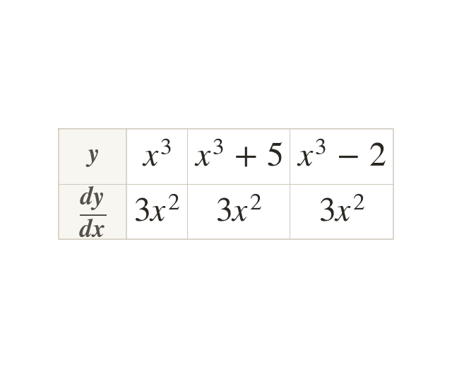
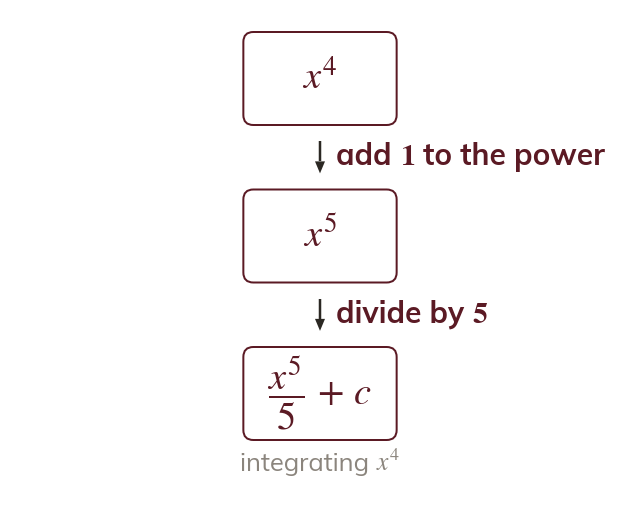
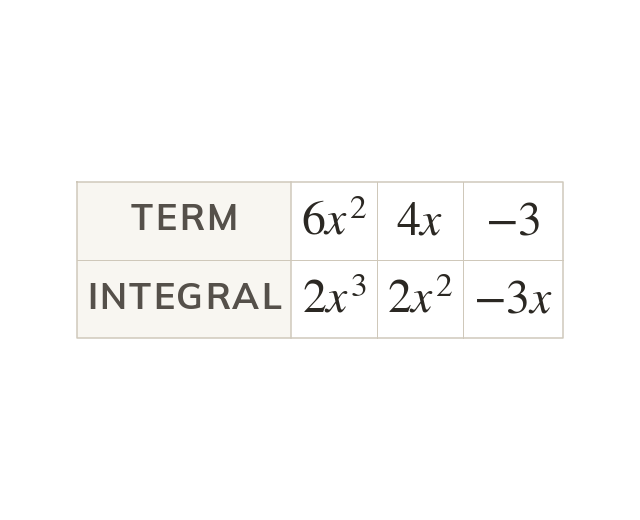
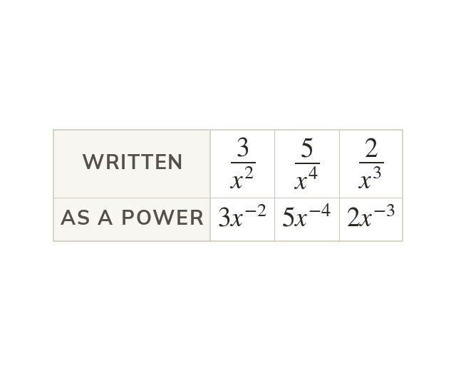
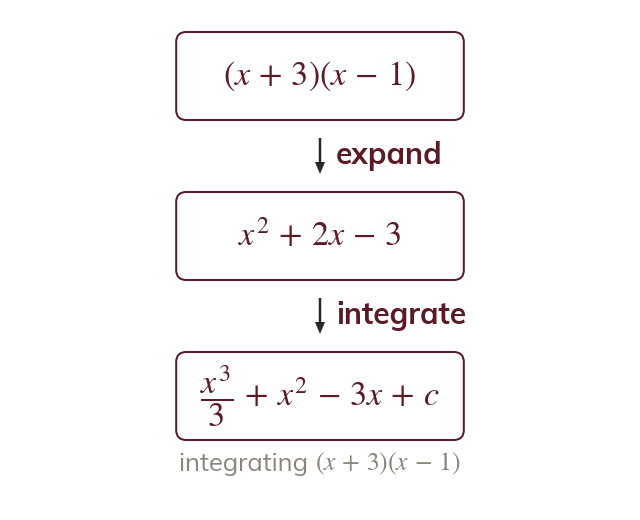
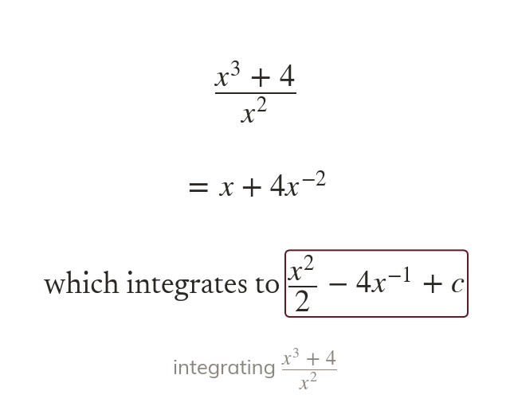

The reverse of differentiating
Differentiating gives so integrating gives
But and differentiate to too, so the integral is where is a constant.
Differentiation finds the gradient from a curve; integration runs it backwards, from the gradient to the curve. This lesson builds the rule for and the integral sign, which uses to find a curve through a point and turns into a number.
Work down the page at your own pace. Write every answer in your book first, then click to check it.
Read each card, then follow the worked examples one step at a time.

Differentiating gives so integrating gives
But and differentiate to too, so the integral is where is a constant.

To integrate add to the power and divide by the new power, then add c. It works for every rational n except where the new power would be

A constant multiple stays, a sum is integrated one term at a time, and a constant k integrates to kx. So with one for the whole integral.
Pick an answer. If it's wrong, the feedback tells you which mistake it was.
Write the blanks in your book first, then tap each one to check.
Read each card, then follow the worked examples one step at a time.

The rule integrates only powers of so a root or a reciprocal is written as a power first. is to the power ½, and is

A product of brackets is multiplied out into separate powers of x before integrating. Each bracket is never integrated on its own.

A fraction over a single power of x is split, each term on the top divided by the bottom. Then each power is integrated as before.
Pick an answer. If it's wrong, the feedback tells you which mistake it was.
Write the blanks in your book first, then tap each one to check.
Finished? Next lesson: 12.P13.3 Finding Functions.
For each skill, tap the one that is true for you today. Your Revise pages start with anything you mark Not yet.
Your ratings are saved on this device only.
Log in, then search for a code to practise that skill.